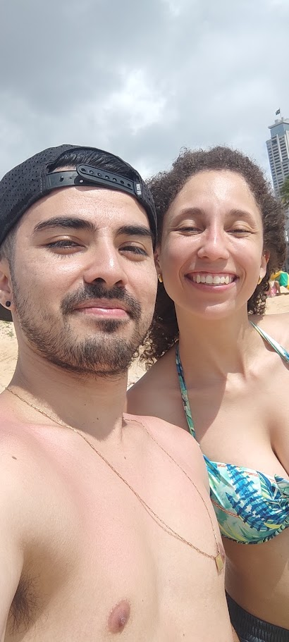

Bruno Ferreira / PuNK
FUNDADOR · TRADUTOR · ROMHACKER
Amo games antigos e punk rock dos anos 90 e 2000. Fã da saga Tony Hawk’s e do clássico Counter-Strike, ando de skate e consumo tudo sobre games antigos. Sou formado em Análise e Desenvolvimento de Sistemas e trabalho como desenvolvedor front-end. Nas horas vagas, tento trazer um jogo bem maneiro traduzido para vocês!